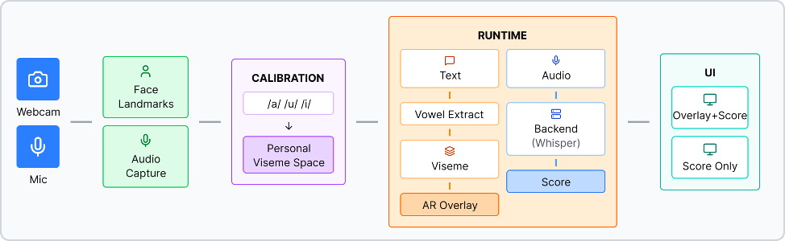

Calibrate
The learner records a neutral pose and three corner vowels: /a/, /u/, and /i/.
Research project · HCI Korea 2026
A browser-based pronunciation trainer that turns abstract scores into visible, personalized guidance by overlaying target Korean vowel mouth shapes directly onto the learner’s face.

The problem
Most computer-assisted pronunciation tools reduce performance to a number. For Korean vowels, subtle differences in mouth opening, lip rounding, and spreading matter, but learners are often left without an actionable visual target.
VisemeAR explores whether personalized articulatory feedback can bridge that gap without specialized equipment or a headset.
How it works
The learner records a neutral pose and three corner vowels: /a/, /u/, and /i/.
MediaPipe Face Mesh captures lip landmarks and constructs a viseme space adapted to the learner’s facial geometry.
The target mouth shape stays aligned to the learner’s head pose in real time while they speak.
A Whisper-based pipeline returns pronunciation feedback, pairing visual guidance with an immediate 0–100 score.
Study result
In a controlled within-subject study, 24 beginner learners practiced Korean syllables and words under two conditions: Overlay + Score and Score-only. Items trained with the personalized overlay improved more from pre-test to post-test.
What we learned
Learners used the personalized target as a concrete reference for reshaping their lips.
They compared neighboring vowel shapes to identify small articulatory differences.
They combined what they saw with what they heard rather than relying on the numeric score alone.
Publication
Accepted for an oral presentation at HCI Korea 2026.